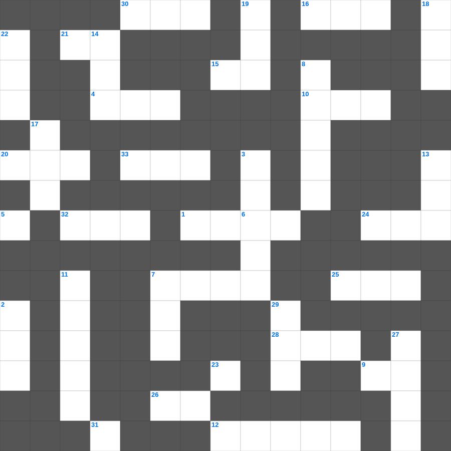

성경 속 명언: 믿음
무료로 즐기는 성경 속 명언 성경 속 명언 말씀 퀴즈! 35개의 힌트로 구성된 가로세로 낱말 퍼즐입니다. PC와 모바일 모두 지원되며, 정답을 바로 확인할 수 있어 혼자서도 쉽게 풀 수 있습니다.

📝 가로 힌트
1. 예수님이 십자가에 못 박히신 곳
4. 이것 하지 말라(남의 물건을 가져감)
5. 겨자씨 한 알 만한 믿음이 있으면 이 이것을 옮기리라
6. 바울의 고향
7. 빌립이 전도한 제자
9. 사랑받는 제자로 불린 사람
10. 바울이 2년 동안 가르쳤던 서원
12. 성경의 맨 마지막 책
15. 제물을 통째로 태워 드리는 제사
16. 어린아이가 가져온 보리떡의 개수
20. 바울이 로마로 가기 전 마지막으로 머문 섬
21. 여호와는 나의 이것이시니 내게 부족함이 없으리로다
24. 삼손의 힘의 비밀을 알아낸 여인
25. 함께 가져온 물고기의 마리 수
26. 안식일을 기억하여 이것하게 지키라
28. 이사악의 아내
30. 모세가 십계명을 받은 산
31. 너는 나 외에는 다른 이것들을 두지 말라
32. 성경의 맨 처음 책
33. 이스라엘이 광야에서 보낸 년수
📝 세로 힌트
2. 메시아의 탄생을 예언한 평화의 선지자
3. 베드로와 안드레의 고향
6. 사자 굴에서도 살아남은 사람
7. 예수님이 자라나신 동네
8. 남은 조각을 거둔 바구니의 수
11. 바울이 아덴(아테네)에서 복음을 전한 곳
13. 이스라엘의 유일한 여성 사사
14. 평안히 눕고 이것하기도 하리니
17. 모세의 누나
18. 엘리야가 바알 선지자와 대결한 산
19. 죄를 속하기 위해 드리는 제사
22. 나아만 장군이 문둥병을 고친 강
23. 모세가 반석을 치자 나온 것
27. 마태 마가 누가 다음 복음서
29. 이스라엘이 외칠 때 무너진 성
🏷️ 키워드
성경 속 명언 말씀 퀴즈, 성경 속 명언, 십자가로세로, 성경퀴즈, 말씀퀴즈, 가로세로퍼즐